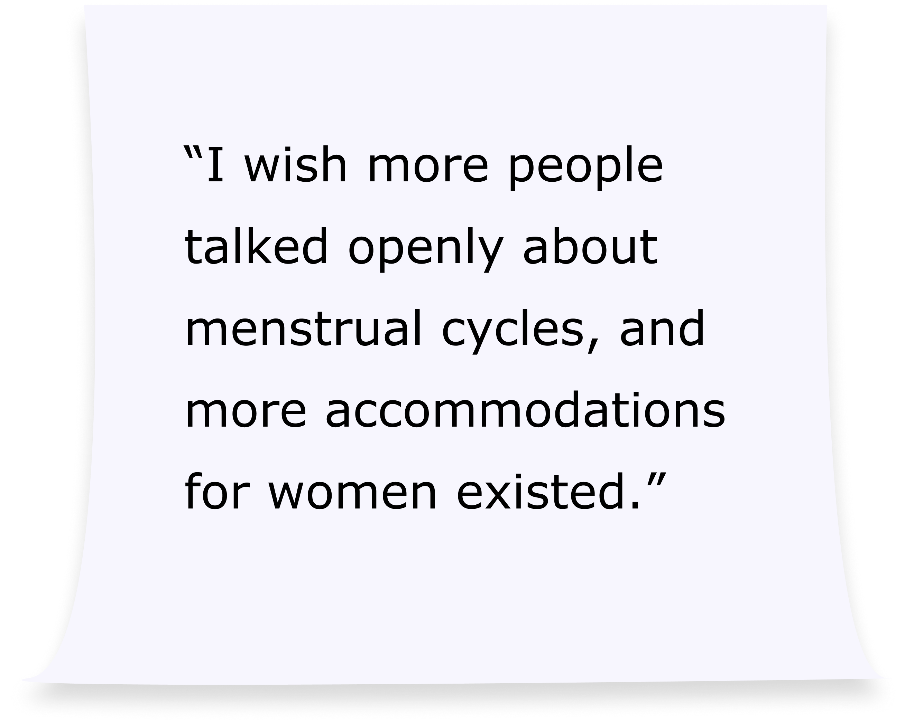
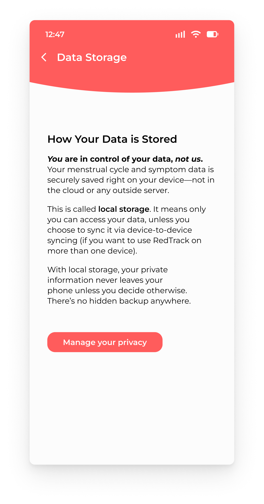

Project Overview
Title: Menstrual Cycle Research Study
Objective: Understand how women who struggle with their menstrual cycles manage them and locate resources and information.
Sub-objective: Can AI be useful in making this process easier?
Team & Timeline: This was a solo study; September 5th, 2025 - October 30th, 2025
Role: UX Researcher
Tools: Figma, Zoom, Apple's Voice Memos, Adobe Acrobat, Google Forms, and Google Docs.
Table of Contents
Recruitment Strategy
Reach out to friends who have expressed complications with their menstrual cycles before, and menstrual-focused student organizations on campus, sending a Google Form explaining what the research study is for and why I am doing it, along with screener questions.
Recruitment Script
For my class, I have to conduct research on a topic of my choice. I would like to understand how women who struggle with their periods manage it and locate resources. I decided on this topic because many women struggle with their menstrual cycles, and they don't always know what to do to manage it. Periods are something most women have to deal with for the majority of their lives, and so it is important that we take the time to really understand it.
Screener
Q1: Are you over the age of 18? (Yes / No)
| Answer Choice | Inclusion / Exclusion |
|---|---|
| YES | Include |
| NO | Exclude - will not be interviewing minors |
Q2: Are you someone who has dealt with their period for at least 1 year? (Yes / No / Other)
| Answer Choice | Inclusion / Exclusion |
|---|---|
| YES | Include - having experienced a period for at least a year will provide better data |
| NO | Exclude - in the case where they are in the very beginning of their period (i.e. recently had 1st period) |
| OTHER | Include - Some women have irregular periods and I'd want to hear about their experiences |
Q3: Would you say your period is particularly hard to manage? (Yes / No / Sometimes)
| Answer Choice | Inclusion / Exclusion |
|---|---|
| YES | Include - will receive more data |
| NO | Exclude |
| SOMETIMES | Include - will have more relevant experiences to share compared to someone who describes their period as “easy to manage” |
Q4: Would you say you are someone who struggles with understanding your period and/or dealing with your symptoms? (Yes / No / Sometimes)
| Answer Choice | Inclusion / Exclusion |
|---|---|
| YES | Include - will receive more data |
| NO | Exclude |
| SOMETIMES | Include - more relevant experiences to share compared to someone who answers "NO" |
Interview Questions
My interview questions were ordered so that each participant had the opportunity to tell their story in order from beginning to present.
Warm-up
- Can you tell me a little bit about yourself?
- Can you tell me about the time you first learned about periods?
General Issues
- How do you typically feel when you're on your period?
- In what ways does your period impact your daily routines and activities, if at all?
Deep Focus 1 - Daily Management, Resources and Challenges
- Can you walk me through what a typical day looks like for you on your period?
- What aspects of your period do you find the most challenging or difficult to manage?
- What products, services, or methods do you usually use to help manage your period, if any?
- Do you use any tools or services to help track your cycle? Why or why not?
Deep Focus 2 - Seeking Information & Healthcare
- If you experience something unexpected, or don't understand what's happening during your period, what steps do you take to find information or support?
- Have you ever visited a healthcare professional, like a gynecologist, about your period?
- Can you walk me through your experience visiting a healthcare professional about your period?
- Are there any products, resources, or services you wish existed to help you during your period that you haven't found?
- Would you be interested in using AI technologies to help manage your period and access information?
Retrospective
- Looking back on everything you have talked about with me today, is there anything you wish people understood better about what it's like for you to have your period?
Wrap-up
- Is there anything else about your experiences with your menstrual cycle that you would like to share that we haven't talked about yet?
Key Thematic Codes (in I/my statements)
- Outside factors influenced how I felt towards periods.
- I am concerned that some period tracking apps collect and sell my data.
- When I experience irregularities, I become concerned.
- Subscriptions and Advertisements become annoying on period apps.
- Doctor visits are helpful when doctors fully inform me.
- AI could be a useful tool to provide easily accessible information.
- I wish more people talked openly about menstrual cycles, and more accommodations for women existed.
Period App Creation Based on Key Findings
Name: RedTrack
Focuses: Privacy, Community, and Information

Privacy: RedTrack will ensure user data is protected by the utilization of local storage. The app will receive profit through advertisements, subscriptions, and donations, as to not revert to the selling of user data.
I wanted to prioritize the protection of user data, so the inclusion of advertisements and subscriptions are still necessary, despite its annoyance, as expressed in some interviews. The subscription aspect would not prevent the user from accessing the most important aspects of the app (i.e. articles and detailed cycle information).

Community: RedTrack would have a “Support Community” feature that acts as a social platform where users can connect, chat, and answer and post questions.

Information: RedTrack would provide detailed information about the users entire cycle, as well as have a page dedicated to informative articles discussing various topics about menstrual health.
Comparative Analysis
After bringing RedTrack to life, focusing on the main components I wanted to include in the app, I conducted a comparative analysis with 3 other popular period apps (Flo, Clue, and Stardust).
Features In Focus
- Cycle Details & Period Tracking
- Symptom Monitoring
- Finding Health Information
- Personalized Information & Community Support
- Data Privacy
Based on the findings, RedTrack should...
- Focus on encrypting user data and keeping user health data separate from user's personal data to account for better data privacy.
- Allow users to invite their partners and/or friends to the app to view their cycle.
- Provide detailed explanations of the symptoms as they're logged by the user.
- Provide daily health insights for the user based on their cycle and their current phase.